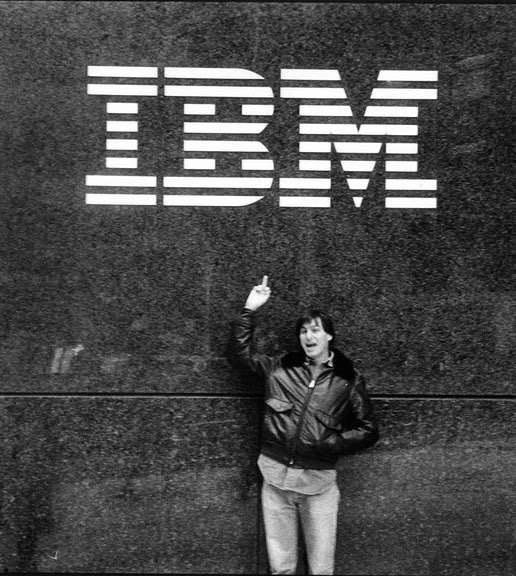

Some pictures of Steve


1955 - 2011
Steven Paul Jobs was an American inventor, designer and entrepreneur who was the co-founder,
chief executive and chairman of Apple Computer.
Apple's revolutionary products, which include the iPod,
iPhone and iPad, are now seen as dictating the evolution of modern technology.
Born in 1955 to two University of Wisconsin graduate students who gave him up for adoption,
Jobs was smart but directionless, dropping out of college and experimenting with
different pursuits before co-founding Apple with Steve Wozniak in 1976.
Jobs left the company in 1985, launching Pixar Animation Studios,
then returned to Apple more than a decade later. Jobs died in 2011 following a
long battle with pancreatic cancer.